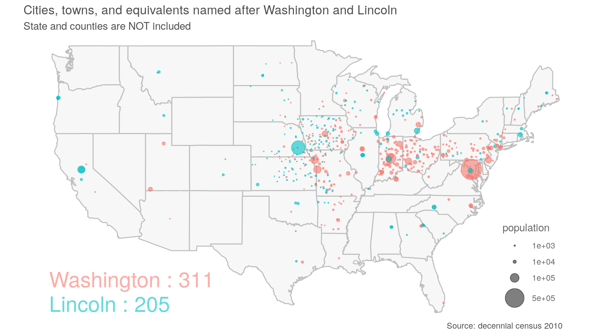
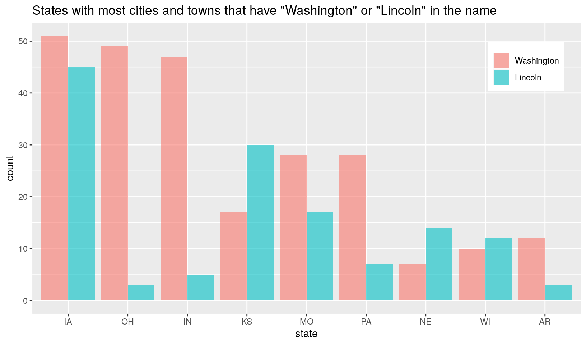

Washington and Lincoln are the two greatest presidents in the history of the United States. This post, however, does not discuss how great they are. Instead, I want to show a fun fact related the two presidents: how many cities and towns (and equivalents) are named after them. I am living in Lincoln, Rhode Island, a town so named in honor of President Lincoln.
The data are extracted from decennial census 2010, the most detailed census so far. There are 311 cities and towns having “Washington” in their names and 205 having “Lincoln”. We also extract the coordinates and population of these cities and towns and plot them on the US map. There are significantly more places named after “Washington” than “Lincoln” in three states, Indiana , Ohio, and Pennsylvania. They combined have 109 more places with Washington than with Lincoln.


Here are the code. We use package totalcensus to extract data from decennial census 2010.
Let’s first load packages.
library(totalcensus)
library(data.table)
library(magrittr)
library(ggmap)Define a function to extract citis and towns including particular words in names.
get_area <- function(keywords){
# read census data
selected <- read_decennial(
year = 2010,
states = "US",
geo_headers = c("NAME"),
show_progress = FALSE
) %>%
# select place and county subdivision that have name in NAME
.[SUMLEV %in% c("060", "160")] %>%
.[NAME %like% paste0(keywords, collapse = "|")] %>%
# remove duplicates by (lon, lat)
unique(by = c("lon", "lat"))
# add area column to store keywords of area
for (nm in keywords){
selected[NAME %like% nm, area := nm]
}
return(selected)
}Here are the cities or town having words “Washington” or “Lincoln” in their names.
wl <- get_area(c("Washington", "Lincoln")) %>%
.[, area := factor(area, c("Washington", "Lincoln"))]
# first five rows
# lon lat state NAME population GEOCOMP SUMLEV area
# 1: -86.10771 33.61350 AL Lincoln CCD 7771 total 060 Lincoln
# 2: -86.07064 33.62218 AL Lincoln city 6266 total 160 Lincoln
# 3: -111.27100 34.40035 AZ Washington Park CDP 70 total 160 Washington
# 4: -92.13358 33.43522 AR Washington township 1410 total 060 Washington
# 5: -92.70242 35.23478 AR Washington township 1852 total 060 WashingtonPlot the cities and towns on a map.
us <- map_data('state')
ggplot(us, aes(long, lat)) +
geom_map(map=us, aes(map_id=region), fill="grey97", color="grey") +
geom_point(data = wl[order(-population)], aes(lon, lat, size = population, color = area), alpha = 0.6) +
scale_size_area(max_size = 10, breaks = c(1000, 10000, 100000, 500000)) +
ylim(26, 48.5) +
annotate("text", x = -125, y = 28.5, label = "Washington : 311", color = "#F8766D", hjust = 0, alpha = 0.6, size = 8) +
annotate("text", x = -125, y = 26, label = "Lincoln : 205", color = "#00BFC4", hjust = 0, alpha = 0.6, size = 8) +
labs(color = NULL) +
guides(color = "none",
size = guide_legend(override.aes = list(alpha = 0.5))) +
coord_map() +
labs(title = "Cities, towns, and equivalents named after Washington and Lincoln",
subtitle = "State and counties are NOT included",
caption = "Source: decennial census 2010") +
theme_bw() +
theme(legend.position = c(0.9, 0.),
legend.justification = c(0.5, 0),
legend.title = element_text(color = "grey40"),
legend.text = element_text(color = "grey40"),
panel.grid = element_blank(),
panel.border = element_blank(),
axis.title = element_blank(),
axis.text = element_blank(),
axis.ticks = element_blank(),
plot.caption = element_text(hjust = 0.95, color = "grey30"),
plot.title = element_text(color = "grey30"))Bar plot of states with most cities or towns named after “Washington” or “Lincoln”,
# count
wl[, .(count = .N), by = .(area, state)] %>%
.[state %in% c("IN", "OH", "PA", "MO", "IA", "KS", "NE", "WI", "AR")] %>%
.[, state := factor(state, levels = c("IA", "OH", "IN", "KS", "MO", "PA", "NE", "WI", "AR"))] %>%
ggplot(aes(state, count, fill = area)) +
geom_col(position = "dodge", alpha = 0.6) +
labs(title = 'States with most cities and towns that have "Washington" or "Lincoln" in the name',
fill = NULL) +
theme(legend.position = c(0.9, 0.85))